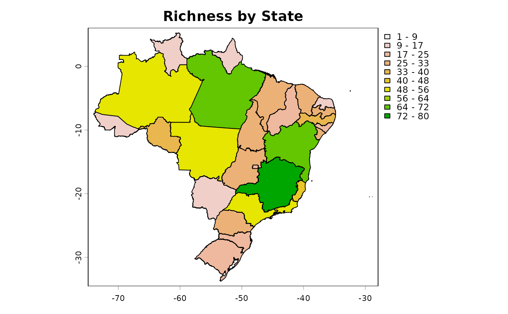

Get a presence-absence matrix of species based on its distribution (brazilian states and/or countries) according to Fauna do Brasil.
fauna_pam(data, by_state = TRUE, by_country= FALSE,
remove_empty_sites = TRUE,
return_richness_summary = TRUE,
return_spatial_richness = TRUE,
return_plot = TRUE)(data.frame) a data.frame imported with the
load_faunabr function or generated by either
select_fauna or subset_fauna functions
(logical) get occurrences by State. Default = TRUE
(logical) get occurrences by countries. Default = FALSE
(logical) remove empty sites (sites without any species) from final presence-absence matrix. Default = TRUE
(logical) return a data.frame with the number of species in each site. Default = TRUE
(logical) return a SpatVector with the number of species in each site. Default = TRUE
(logical) plot map with the number of species in each site. Only works if return_spatial_richness = TRUE. Default = TRUE
If return_richness_summary and/or return_spatial_richness is set to TRUE, return a list with:
PAM: the presence-absence matrix (PAM)
Richness_summary: a data.frame with the number of species in each site
Spatial_richness: a SpatVector with the number of species in each site (by State and/or country)
If return_richness_summary and return_spatial_richness is set to FALSE, return a presence-absence matrix
#Test function
data("fauna_data") #Load fauna e Funga do Brasil data
#Select native species of mammals with occurrence only in Brazil
br_mammals <- select_fauna(data = fauna_data,
include_subspecies = FALSE, phylum = "all",
class = "Mammalia",
order = "all", family = "all",
genus = "all",
lifeForm = "all", filter_lifeForm = "in",
habitat = "all", filter_habitat = "in",
states = "all", filter_states = "in",
country = "BR", filter_country = "only",
origin = "all", taxonomicStatus = "accepted")
#Get presence-absence matrix in states
pam_mammals <- fauna_pam(data = br_mammals, by_state = TRUE,
by_country = FALSE,
remove_empty_sites = TRUE,
return_richness_summary = TRUE,
return_spatial_richness = TRUE,
return_plot = TRUE)
